|
 |
| ИЛСИРА® (ILSIRA) levilimab раствор д/п/к введения | ||||||||||||||||||||||||||||||||||||||||||||||||||||||||||||||
|
Клинико-фармакологическая группа: Иммунодепрессивный препарат. Антагонист рецепторов интерлейкинов Номер и дата регистрации: ЛП-006244 от 05.06.20 Код ATX: L04AC |
Владелец регистрационного удостоверения: зарегистрировано и произведено Представительство: | |||||||||||||||||||||||||||||||||||||||||||||||||||||||||||||
Форма выпуска, состав и упаковка Раствор для п/к введения прозрачный, желто-коричневого цвета; возможно наличие легкой опалесценции.
* предварительно наполненный шприц. Вспомогательные вещества: натрия ацетата тригидрат - 0.392 мг, глицин - 6.8 мг, маннитол - 20.7 мг, кислота уксусная ледяная - до pH 5.0, вода д/и - до 0.9 мл. 0.9 мл - шприцы трехкомпонентные из бесцветного стекла (1) - упаковки ячейковые контурные (2) в комплекте с салфетками спиртовыми (2 шт.) - пачки картонные. На каждый шприц наклеивают самоклеящуюся этикетку. | ||||||||||||||||||||||||||||||||||||||||||||||||||||||||||||||
| ||||||||||||||||||||||||||||||||||||||||||||||||||||||||||||||
Описание препарата основано на официально утвержденной инструкции по применению и утверждено компанией-производителем для издания 2023 г. | ||||||||||||||||||||||||||||||||||||||||||||||||||||||||||||||
Фармакологическое действие |
Фармакокинетика |
Показания |
Режим дозирования |
Побочное действие |
Противопоказания |
Беременность и лактация |
Особые указания |
Передозировка |
Лекарственное взаимодействие |
Условия хранения и сроки годности |
Условия реализации
Фармакологическое действие
Левилимаб - рекомбинантное моноклональное антитело подкласса IgG1, высокогомологичное нативным человеческим антителам, связывающееся с α-субъединицей рецептора к интерлейкину-6 (ИЛ-6). Молекула левилимаба содержит вариабельные фрагменты легких и тяжелых цепей глубокой оптимизации и константные домены с полностью человеческой последовательностью. Левилимаб связывается и блокирует как растворимые (рИЛ6Р), так и мембранные рецепторы ИЛ-6 (мИЛ6Р). Блокада обеих форм рецептора позволяет предотвратить реализацию ИЛ-6-ассоциированного провоспалительного каскада, препятствует активации антиген-представляющих клеток, В- и Т-лимфоцитов, моноцитов и макрофагов, эндотелиальных клеток и фибробластов, и избыточной продукции других провоспалительных цитокинов. ИЛ-6 является ключевым элементом синдрома массивного высвобождения цитокинов (синдрома "цитокинового шторма", гемофагоцитарного лимфогистиоцитоза или синдрома активации макрофагов), который может привести к острому респираторному дистресс-синдрому, полиорганной недостаточности и являться причиной летального исхода. Массивное высвобождение цитокинов ("цитокиновый шторм") наблюдается у пациентов, получающих иммуносупрессивную терапию, включая деплецирующие агенты (в частности моноклональные антитела к рецепторам Т- и В-лимфоцитов), а также при тяжелых инфекционных заболеваниях, в т.ч. у пациентов с COVID-19. Высокий уровень ИЛ-6 в крови ассоциирован с более тяжелым течением новой коронавирусной инфекции и выраженными изменениями легких, что обусловливает потребность в интенсивной терапии и увеличивает риск летального исхода при COVID-19. ИЛ-6 – единственный цитокин, непосредственно индуцирующий синтез острофазовых белков в гепатоцитах: С-реактивного белка (СРБ), фибриногена, сывороточного амилоидного белка А-SAA, гепсидина, лептина. Кроме того, ИЛ-6 участвует в активации и поддержании местных воспалительных реакций (образование паннуса в синовии, стимуляция остеокластогенеза - эрозии хрящевой ткани, остеопороз), что наблюдается в патогенезе ревматоидного артрита. Специфическая противовоспалительная активность левилимаба продемонстрирована в тестах in vitro и in vivo. Левилимаб оказывает антипролиферативное действие на культуру клеток DS-1, вызывая дозозависимое ингибирование роста клеток. На модели коллаген-индуцированного артрита у яванских макак (Macaca fascicularis) многократное (1 раз в неделю в течение 7 недель) п/к введение левилимаба сопровождается снижением выраженности воспалительной реакции в суставах, что подтверждено при гистологическом исследовании (значимое снижение выраженности воспалительных и дегенеративных изменений хрящевой ткани). Изменение параметров фармакодинамических маркеров (нарастание концентрации рИЛ6Р, насыщение мИЛ6Р, нарастание концентрации ИЛ-6) свидетельствует о высокоэффективной дозозависимой нейтрализации препаратом левилимаб обеих форм рецептора ИЛ-6, что в свою очередь сопровождается быстрым и выраженным снижением сывороточной концентрации СРБ, отражающим эффективное подавление воспалительного процесса. В клинических исследованиях левилимаба продемонстрировано блокирование до 90% мембранных рецепторов к ИЛ-6 в течение первых 2 часов от момента однократного п/к введения препарата в дозе 1.6 мг/кг и более. Фармакокинетика
Всасывание и распределение При однократном п/к введении левилимаба наблюдается дозозависимый рост его концентрации в сыворотке крови. После введения препарат начинает обнаруживаться в сыворотке крови пациентов через 2-12 ч, и его концентрация нарастает, достигая максимальных значений через 96 [72-168] ч. Дозы препарата, превышающие 2.0 мг/кг, продемонстрировали двухфазный характер увеличения концентрации: первый пик наблюдался в период 48-72 ч, второй – к 168 ч с последующим снижением до неопределяемых значений к 70 дню. После однократного п/к введения препарата в дозе 162 мг Cmax левилимаба в сыворотке крови составляла 17543 [10975; 28323] нг/мл, а значения показателя AUC, рассчитанного в период 0-168 ч (AUC0-168) – 1866231 [1297632-3719014] нг/мл×ч. При многократном введении левилимаба пациентам с ревматоидным артритом значения суммарной AUC, рассчитанной в период 0-2016 ч после введения (AUC0-2016), составили 189580779 [134794695; 230680771] нг/мл×ч при введении 1 раз в неделю и 50763951 [34465213.5; 65810194.5] нг/мл×ч при введении 1 раз в 2 недели. Показатель Сmax-mult при повторных введениях нарастал и достигал значений 201024 [151563-246408] нг/мл при еженедельном введении препарата и 51570 [37201-71740] нг/мл при введении 1 раз в 2 недели. При этом Tmax составляло 1848 [1512; 2016] ч при еженедельном введении препарата и 1848 [1512; 1848] ч при введении 1 раз в 2 недели соответственно. Стационарный Vd составил 7871.029 [4226.795; 13363.547] мл при введении препарата 1 раз в неделю и 7130.453 [5532.978; 11387.959] мл при введении 1 раз в 2 недели. При повторных введениях отмечается накопление препарата, с ростом Cmax в 6.5-14.2 раза при еженедельном введении и в 1.9-4.2 раза при введении препарата 1 раз в 2 недели. Коэффициент кумуляции (AR) составил 10.932 [6.446; 14.178] для еженедельного введения препарата и 2.593 [1.902; 4.164] для введения 1 раз в 2 недели. Таким образом, у пациентов с ревматоидным артритом многократное п/к введение левилимаба 1 раз в неделю обеспечивает более высокую сывороточную концентрацию и экспозицию по сравнению с введением 1 раз в 2 недели. Выведение Общий клиренс (Cl) левилимаба после однократного введения в дозе 2.2 мг/кг составил 35.288±11.7 мл/ч, а в дозе 2.9 мг/кг показатель Cl – 25.974±1.1 мл/ч. T1/2 однократной п/к дозы 2.9 мг/кг составил 133.683 [92.754; 197.197] ч. Значения показателей, характеризующих период элиминации, обладают дозозависимостью (показатели среднего времени пребывания препарата в организме (MRT) и T1/2 нарастают с увеличением введенной дозы, а Cl – снижается), что говорит о нелинейной фармакокинетике препарата, обусловленной мишень-опосредованными распределением и элиминацией. Фармакокинетика у особых групп пациентов Пациенты с почечной и печеночной недостаточностью: специальных исследований у данной категории пациентов не проводилось; фармакокинетические данные у больных с почечной и печеночной недостаточностью отсутствуют. Пациенты в возрасте старше 65 лет: фармакокинетические данные у лиц в возрасте старше 65 лет отсутствуют. Показания
Новая коронавирусная инфекция (COVID-19)
Ревматоидный артрит
Режим дозирования
Для п/к введения. Препарат Илсира® предназначен для введения как в амбулаторно-поликлинических, так и в стационарных условиях. Применение левилимаба должно осуществляться под контролем врача. В случае длительного применения препарата, в частности для терапии ревматоидного артрита, если врач считает это возможным, после соответствующего обучения технике п/к инъекций пациенты могут самостоятельно вводить себе препарат. Препарат Илсира® вводят п/к с помощью преднаполненного шприца в область передней брюшной стенки (отступая не менее 5 см от пупка), передней и боковой поверхности бедра или средней трети наружной части плеча. Не следует вводить препарат в места с поврежденной или измененной кожей (с наличием уплотнений, покраснений, новообразований, гиперпигментаций или повышенной чувствительности). С целью патогенетической терапии синдрома высвобождения цитокинов при тяжелом течении новой коронавирусной инфекции (CОVID-19) рекомендуемая доза препарата Илсира® составляет 324 мг однократно в виде двух п/к инъекций по 162 мг каждая. В случае недостаточного эффекта первой дозы левилимаба возможно повторное введение препарата через 48–96 ч в дозе 324 мг в виде двух п/к инъекций по 162 мг каждая. Решение о необходимости повторного введения принимается исключительно врачом. Для терапии ревматоидного артрита рекомендуемая доза препарата Илсира® составляет 162 мг 1 раз в неделю. При достижении ремиссии заболевания возможно применение в режиме 162 мг п/к 1 раз в 2 недели. Пациентам, не достигшим ремиссии, рекомендовано продолжить применение препарата в дозе 162 мг п/к 1 раз в неделю. Пациентам, имеющим нарастание активности заболевания после снижения кратности введений, рекомендовано возобновить применение препарата в дозе 162 мг п/к 1 раз в неделю. При развитии нежелательных явлений в ходе терапии ревматоидного артрита, связанных с изменением лабораторных показателей, следует провести коррекцию дозы и режима введения в соответствии с рекомендациями в таблицах 1, 2 и 3. Таблица 1. Рекомендации по коррекции дозы при повышении активности печеночных ферментов АЛТ или АСТ
Таблица 2. Рекомендации по коррекции дозы при снижении абсолютного числа нейтрофилов (АЧН)
Таблица 3. Рекомендации по коррекции дозы при снижении количества тромбоцитов
Пропуск дозы при терапии ревматоидного артрита При пропуске очередного введения по любой причине инъекция препарата Илсира® должна быть произведена как можно быстрее. Новый отсчет для даты следующего введения начинают с момента фактически проведенной инъекции препарата Илсира®. Указания по применению Подготовка к проведению п/к инъекции
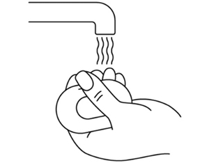
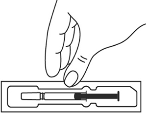 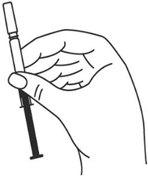
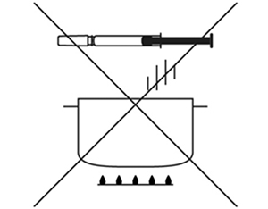
На данном этапе не следует снимать колпачок шприца. Техника выполнения п/к инъекции препарата Илсира® в преднаполненном шприце 1. Выберите место инъекции (передняя брюшная стенка (отступая не менее 5 см от пупка), передняя и боковая поверхность бедра или средняя треть наружной части плеча (возможные места для инъекций закрашены на рисунке ниже)). 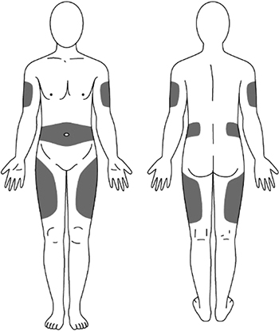 2. Нельзя вводить препарат в место на коже, где имеется болезненность, покраснение, уплотнение или кровоподтек. Эти признаки могут указывать на наличие инфекции. Также не следует вводить препарат в места родинок, гиперпигментаций и шрамов. 3. Место укола необходимо обработать спиртовой салфеткой круговыми движениями. 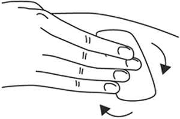 4. Шприц не встряхивать. 5. Снимите колпачок с иглы, не дотрагиваясь до иглы и избегая прикосновения к другим поверхностям. 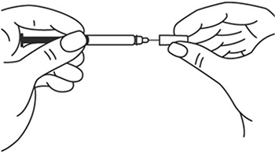 6. Одной рукой возьмите в складку обработанную кожу. 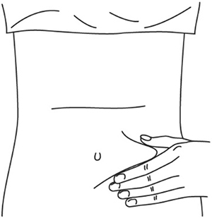 7. В другую руку возьмите шприц, держа его градуированной поверхностью вверх. Введение препарата необходимо осуществлять под углом 45 или 90 градусов к поверхности кожи в зависимости от толщины кожи и выраженности подкожно-жирового слоя (у худощавых пациентов введение препарата осуществляется под углом 45 градусов, у пациентов с толщиной кожной складки более 1.5 см допустимо введение под углом 90 градусов). 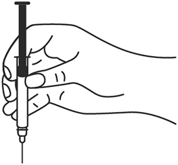 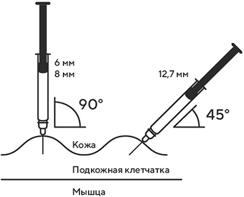 8. Одним быстрым движением полностью введите иглу в кожную складку. 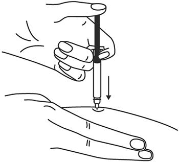 9. После введения иглы отпустите складку кожи. 10. Введите весь раствор медленным постоянным надавливанием на поршень шприца в течение 2-5 сек. 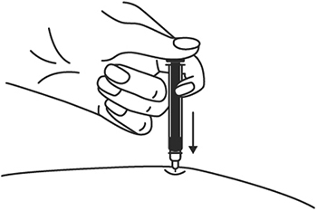 11. Когда шприц будет пустым, выньте иглу из кожи под тем же углом. 12. Кусочком марли слегка прижмите область инъекции в течение 10 сек, но ни в коем случае не трите поверхность. Из места инъекции может выделиться небольшое количество крови. При желании можно воспользоваться пластырем. 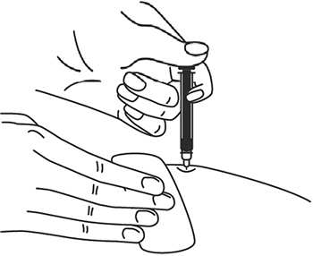 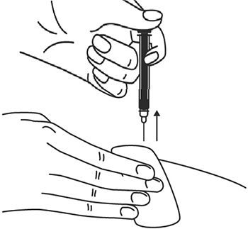 13. После инъекции шприц повторно не использовать. 14. Вторую инъекцию препарата Илсира® для достижения общей дозы 324 мг выполнить аналогичным образом. 15. При последующих инъекциях следует менять место введения. Утилизация расходного материала Неиспользованный раствор препарата, использованные шприцы, салфетки/ватные тампоны и другие расходные материалы подлежат утилизации с применением закрывающегося контейнера, устойчивого к проколам для острых предметов из пластика или стекла. Не допускать хранения использованных шприцев в местах, доступных для детей. Побочное действие
В рамках проведенных клинических исследований у здоровых добровольцев, пациентов с ревматоидным артритом и тяжелым течением новой коронавирусной инфекции (COVID-19) препарат Илсира® показал благоприятный профиль безопасности. Наиболее частыми нежелательными реакциями в проведенных клинических исследованиях были повышение активности АЛТ и АСТ, нейтропения и повышение уровня липидов в крови. Спектр зарегистрированных нежелательных явлений, связанных с применением препарата Илсира®, был ожидаемым для класса ингибиторов рецепторов ИЛ-6. Летальных исходов, связанных с терапией препаратом Илсира®, в ходе клинических исследований не было. В данной инструкции нежелательные реакции представлены в соответствии с международным словарем нежелательных реакций MedDRA. Ниже приведен перечень нежелательных реакций, зарегистрированных у пациентов, получавших левилимаб в рамках клинических исследований, и имеющих определенную, вероятную или возможную степень связи с приемом препарата. Частота указана с учетом следующих критериев: очень часто (≥1/10), часто (от ≥1/100 до <1/10), нечасто (от ≥1/1000 до <1/100), редко (от ≥1/10000 до <1/1000), очень редко (≤10000).
* В клинических исследованиях регистрировались местные реакции в виде эритемы и кожного зуда. ** Данное НР проявлялось повышением АСТ и АЛТ и не сопровождалось другими симптомами токсического гепатита на фоне множественной лекарственной терапии. Также в ходе клинической разработки регистрировались единичные нежелательные явления, для которых в настоящее время связь с применением левилимаба не установлена достоверно: воспаление очага кожного поражения, астения, анемия, лимфаденит, лимфоцитоз, отклонение от нормы процедуры визуализации легких, снижение активности АСТ. В качестве нарушений со стороны иммунной системы в пострегистрационном периоде наблюдались единичные реакции гиперчувствительности (анафилактический шок, ангиоотек), что согласуется с известным профилем безопасности препаратов класса ингибиторов рецепторов ИЛ-6. Противопоказания
С осторожностью Следует соблюдать осторожность при назначении левилимаба следующим категориям пациентов:
В связи со способностью левилимаба подавлять реакции острой фазы воспаления следует проявлять особую осторожность в отношении раннего выявления инфекционных заболеваний на фоне терапии. В связи с ограниченными данными клинических исследований о применении левилимаба у пациентов пожилого возраста следует соблюдать осторожность при назначении препарата пациентам этой возрастной группы. Применение при беременности и кормлении грудью
Беременность Исследований влияния на плод у беременных женщин не проводилось. Известно, что моноклональные антитела могут проникать через плацентарный барьер. Препарат Илсира® противопоказан к применению во время беременности. Женщины детородного возраста и их половые партнеры должны использовать эффективные средства контрацепции в период проведения терапии левилимабом. Период грудного вскармливания Неизвестно, проникает ли левилимаб в грудное молоко. Учитывая то, что иммуноглобулины класса G, к которым относится левилимаб, могут выделяться с грудным молоком, препарат Илсира® противопоказан к применению в период грудного вскармливания. Фертильность Данные о влиянии препарата на фертильность у людей отсутствуют. Особые указания
Прослеживаемость В целях улучшения прослеживаемости биотехнологических лекарственных препаратов наименование и номер серии назначаемого лекарственного препарата левилимаб должны указываться в медицинской документации пациента. Инфекции Наличие таких потенциально тяжелых инфекций как ВИЧ, активный гепатит В, сифилис, туберкулез, относится к противопоказаниям для назначения левилимаба. Левилимаб не следует применять у пациентов с активным течением инфекционных заболеваний, включая локализованные инфекции. Учитывая иммуносупрессивное действие левилимаба, терапия этим препаратом потенциально может приводить к обострению хронических инфекций и повышению риска первичного инфицирования. При реактивации гепатита В или развитии серьезных инфекций терапию левилимабом следует прекратить и назначить соответствующую этиотропную терапию. Соблюдение осторожности требуется в отношении пациентов с рецидивирующими инфекционными заболеваниями в анамнезе, а также лиц, имеющих факторы риска развития инфекций в виде сопутствующих заболеваний или сопутствующей терапии. С учетом подавления левилимабом реакций острой фазы воспаления симптомы инфекционного заболевания могут быть стерты, что следует учитывать при раннем выявлении серьезных инфекций у пациентов, получающих препарат Илсира®. При появлении любых симптомов, свидетельствующих о развитии инфекционного заболевания на фоне применения левилимаба, пациенту следует немедленно обратиться к врачу для своевременной диагностики и назначения терапии. Туберкулез Пациентам с активным туберкулезом терапия препаратом Илсира® противопоказана. Перед назначением препарата Илсира® и в ходе терапии необходимо проводить стандартный скрининг на туберкулез. Пациентам с латентным туберкулезом рекомендуется пройти стандартный курс противотуберкулезной терапии перед началом терапии препаратом Илсира®. Лабораторные показатели Нейтропения. В клинических исследованиях препарата Илсира® отмечалось снижение числа нейтрофилов. При длительной терапии пациентов с ревматоидным артритом снижение АЧН не сопровождалось более высокой частотой развития инфекций, в т.ч. серьезных. Следует соблюдать осторожность при лечении препаратом Илсира® пациентов с АЧН <2×109/л. При снижении АЧН <0.5×109/л терапию препаратом Илсира® следует отменить. Следует оценивать число нейтрофилов через 4-8 недель после начала терапии, а в дальнейшем в соответствии с клинической практикой. Тромбоцитопения. В клинических исследованиях препарата Илсира® отмечалось снижение числа тромбоцитов. При длительной терапии пациентов с ревматоидным артритом снижение числа тромбоцитов не сопровождалось развитием кровотечений. Следует соблюдать осторожность при назначении терапии препаратом Илсира® при числе тромбоцитов ниже 100×103/мкл. Лечение не рекомендуется при числе тромбоцитов <50×103/мкл. Следует оценивать число тромбоцитов через 4-8 недель после начала терапии, а в дальнейшем в соответствии с клинической практикой. Ферменты печени. В клинических исследованиях препарата Илсира® отмечалось повышение активности печеночных трансаминаз без признаков печеночной недостаточности. Частота возникновения подобных изменений может возрастать при совместном использовании с препаратами, обладающими потенциальным гепатотоксическим действием (например, метотрексатом, антибактериальными препаратами и другими). Следует соблюдать осторожность при назначении терапии препаратом Илсира® у пациентов с показателями АЛТ или АСТ, превышающими ВГН более чем в 1.5 раза. Следует оценивать показатели активности печеночных трансаминаз (АЛТ и АСТ) через 4-8 недель после начала терапии, а в дальнейшем в соответствии с клинической практикой. Изменение показателей липидного обмена. В клинических исследованиях препарата Илсира® отмечалось повышение концентрации липидов (холестерин общий и/или ТГ). Следует оценивать показатели липидного обмена через 4-8 недель после начала терапии левилимабом, а в дальнейшем в соответствии с клинической практикой. При ведении пациентов с гиперлипидемией следует учитывать национальные рекомендации. Реакции гиперчувствительности При использовании левилимаба потенциально возможно развитие реакции гиперчувствительности. В рамках проведенных клинических исследований левилимаба реакций гиперчувствительности не зарегистрировано. В ходе пострегистрационного периода оценки препарата Илсира® описаны единичные случаи анафилактических реакций и реакций гиперчувствительности. При возникновении анафилактических или других серьёзных аллергических реакций применение препарата Илсира® следует немедленно прекратить и начать соответствующую симптоматическую терапию. Злокачественные новообразования У пациентов с РА наблюдается повышенный риск злокачественных новообразований, который может усугубляться при длительном применении иммуносупрессивных лекарственных средств. Объем клинических данных по препаратам класса ингибиторов рецептора ИЛ-6 в целом и левилимабу в частности недостаточен для установления частоты развития злокачественных образований и подтверждение наличия причинно-следственной связи с терапией. Продолжается изучение безопасности левилимаба в ходе долгосрочного применения. Наличие алкогольной или наркотической зависимости Наличие алкогольной или наркотической зависимости, а также психических расстройств может стать причиной несоблюдения пациентом графика лечения левилимабом, что, в свою очередь может привести к снижению эффективности терапии. Необходимо более тщательное наблюдение за пациентами с указанными состояниями в связи с отсутствием результатов клинических исследований у данной категории пациентов и возможностью повышенного риска развития гепатотоксичности и других неблагоприятных последствий. Иммуногенность В ходе клинических исследований препарата Илсира®, в т.ч. при долгосрочном (в течение года) лечении ревматоидного артрита, выработки связывающих антител к левилимабу выявлено не было. Пациенты в возрасте старше 65 лет Данные об эффективности и безопасности препарата у пациентов в возрасте старше 65 лет ограничены. Не предполагается наличия существенных возрастных различий в распределении и выведении препарата. Пациенты с нарушениями функции почек и печени Эффективность и безопасность препарата у данной категории пациентов не изучались. Использование в педиатрии Исследование эффективности и безопасности препарата у детей и подростков в возрасте до 18 лет не проводилось. Вакцинация Не следует проводить иммунизацию живыми аттенуированными вакцинами в ходе лечения препаратом Илсира®, т.к. клиническая оценка безопасности данного взаимодействия в рамках клинических исследований не проводилась. Вакцинация живыми аттенуированными вакцинами до начала терапии препаратом Илсира®, а также интервал между вакцинацией и началом терапии должны соответствовать действующим клиническим рекомендациям. Демиелинизирующие заболевания С учетом данных по профилю безопасности препаратов класса ингибиторов рецепторов ИЛ-6 следует соблюдать осторожность при применении левилимаба у пациентов с демиелинизирующими заболеваниями. Необходимо тщательно контролировать появление симптомов, указывающих на развитие демиелинизирующего заболевания ЦНС, несмотря на то, что способность левилимаба вызывать демиелинизирующие заболевания ЦНС в настоящее время не установлена. Влияние на способность к управлению транспортными средствами и механизмами Отсутствуют данные о влиянии препарата Илсира® на способность управлять транспортными средствами и работать с машинами и/или механизмами. Учитывая то, что при терапии другими ингибиторами рецептора ИЛ-6 отмечались эпизоды головокружения, пациентам, испытывающим головокружение при применении препарата Илсира®, не рекомендуется управлять транспортными средствами и механизмами до тех пор, пока головокружение не прекратится. Передозировка
Клинические данные о передозировке препарата Илсира® отсутствуют. Максимальная переносимая доза левилимаба для человека не установлена. В клинических исследованиях при п/к введении левилимаба в максимальной суточной дозе 324 мг двукратно с интервалом 48-96 ч новых нежелательных реакций, изменяющих представление о профиле безопасности препарата, не зарегистрировано. Лечение: специфический антидот отсутствует; проводят симптоматическую терапию. Лекарственное взаимодействие
Сведений о наличии неблагоприятного лекарственного взаимодействия левилимаба с другими лекарственными препаратами до настоящего времени не получено. Смешивание препарата с другими лекарственными средствами строго запрещено. |
||||||||||||||||||||||||||||||||||||||||||||||||||||||||||||||
Вернуться наверх |
||||||||||||||||||||||||||||||||||||||||||||||||||||||||||||||
Copyright © Справочник Видаль «Лекарственные препараты в России», Москва, Россия